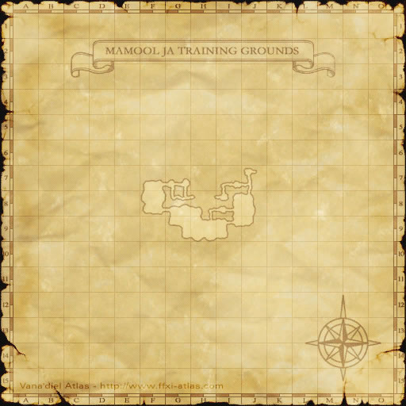
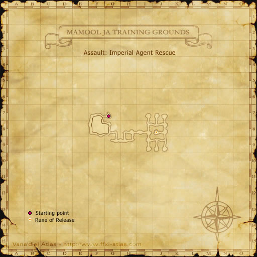
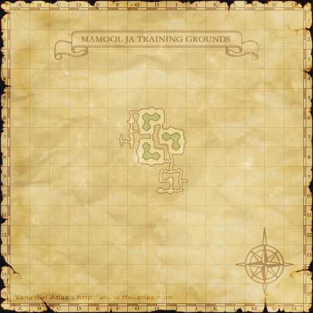
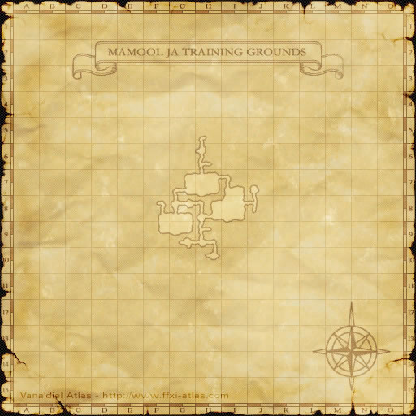
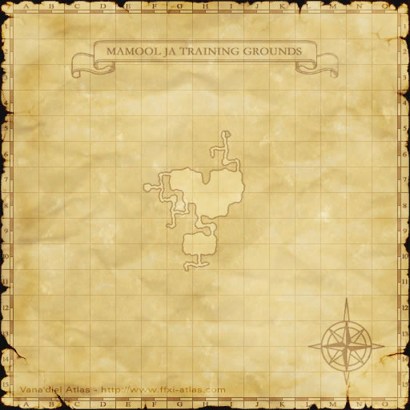

Description
Mamool Ja Training Grounds is a dungeon in Mamool Ja Savagelands.
Map

Maps




References
External references describe their own server or retail rules. Documented Zenith changes take precedence.
Map credits: Map 1 — HorizonXI Wiki · Map 2 — HorizonXI Wiki · Map 3 — HorizonXI Wiki · Map 4 — HorizonXI Wiki · Map 5 — HorizonXI Wiki · Map 6 — HorizonXI Wiki · Map 7 — HorizonXI Wiki · Map 8 — HorizonXI Wiki · Map 9 — HorizonXI Wiki · Map 10 — HorizonXI Wiki. Original game maps © SQUARE ENIX; redrawn maps retain the credited authorship and license.


Additional level-75 reference
|
Situated on the southern tip of the Mamool Ja Savagelands the training grounds are used by the Mamool Ja to train their warriors in new techniques as well as prepare for battle. |
Maps
-
Imperial Agent Rescue
-
Preemptive Strike
-
Sagelord Elimination
-
Breaking Morale
-
The Double Agent
-
Imperial Treasure Retrieval
-
Blitzkrieg
-
Marids in the Mist


Connecting Areas
- Bhaflau Thickets: Mamool Ja Staging Point at (H-11, map 2)
Missions
Name Rank Recommended Level Party Size Points Objective Description Imperial Agent Rescue PSC 60 3-6 1100:3 777:6 Rescue the agent An agent sent to spy on the secret training grounds of the Mamool Ja has been captured. Rescue him before he is interrogated for Imperial secrets. Preemptive Strike PFC 60 3-6 1000:3 Destroy the assassins A unit of Mamool Ja soldiers is training in assassination techniques. Destroy them before they can become a threat to the Empress. Sagelord Elimination SP 70 3-6 3000 Defeat Sagelord Molaal Ja Sagelord Molaal Ja is visiting the training grounds to oversee the progress of the soldiers. His elimination would sow chaos and confusion in the Mamool Ja ranks. Breaking Morale LC 60 3-6 1013:5 (7supplies) 907:5 (5supplies) 853:5 (4supplies) Steal the supplies Scouts report that the new Mamool Ja soldiers have received supplies from their families. Destroy Mamool Ja morale by stealing these supplies while being careful to remain undetected. The Double Agent C 70 3-6 Apprehend the spy There is a double agent among the Imperial Qiqirn spies in the Mamool Ja Training Grounds. Find him before he puts the other spies in danger. Imperial Treasure Retrieval S 50 3-6 Recover the treasure A puk recently stole a treasure box containing enchanted gems from the royal treasury. The gems were then given to Mamool Ja officers as a reward for duty. Find and retrieve the treasure. Blitzkrieg SM 70 3-6 Annihilate the enemy After shedding their skins, the Mamool Ja gather for a festival to celebrate their new scales and dance until exhausted. This is a prime opportunity to catch them off guard! Marids in the Mist CS 70 3-6 Neutralize the marids Our agents have informed us that the Mamool Ja have been training marids to use during sieges on the Empire. You are to locate these deadly beasts and capture or eliminate them before it's too late. Azure Ailments SL 70 3-6 ? Gather pathological data To protect against an outbreak of the dreaded kraken flu, data is required on the effects of the disease. Healthy volunteers are wanted to travel to the Mamool Ja Training. The Susanoo Shuffle FL 70 3-6 1500 (always) Defeat Orochi In an attempt to strengthen their bonds with the Mamool Ja, an eastern nation has provided the beastmen with a new biologically engineered hydra hybrid known as Orochi. You are to infiltrate the training grounds and eliminate the new threat.
Rewards
Item Assault Pts Item Assault Pts Item Assault Pts Item Assault Pts Antivenom Earring 3,000 Ebullient Ring 5,000 Enlightened Chain 8,000 Spectral Belt 10,000 Bullseye Cape 10,000 Storm Tulwar 15,000 Imperial Neza 15,000 Storm Tabar 15,000 Yigit Gages 20,000 Amir Boots 20,000 Pahluwan Seraweels 20,000
Adapted from Eden Wiki: Mamool Ja Training Grounds · Contributors and history · CC BY-SA 4.0. Revision 45689. Layout, links and optional background text adapted for Zenith.